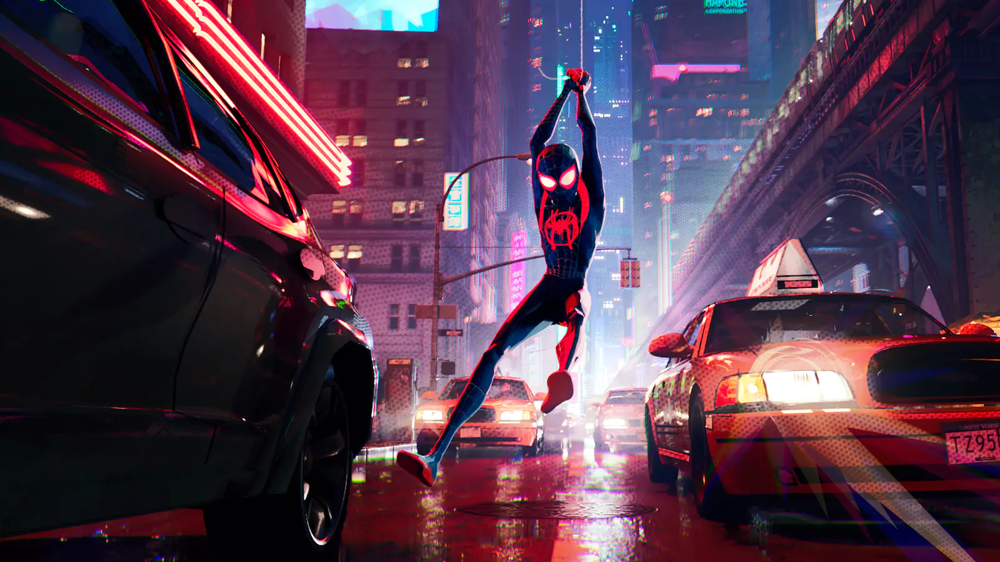

Du får följa historien om spider man en gång till men den hör gången lite anurlunda med Miles Morales som spider man och flera andra spider mans som ska rädda världen.
Filmen utgivningsdatum är 14 december 2018.
Den skapades av Chris Miller och Phil Lord med sony pictures animation.
